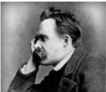

Des mouches de la place publique
Fuis, mon ami, dans ta solitude ! Je te vois étourdi par le bruit des grands hommes et meurtri par les aiguillons des petits.
Avec dignité, la forêt et le rocher savent se taire en ta compagnie. Ressemble de nouveau à l'arbre que tu aimes, à l'arbre aux larges branches : il écoute silencieux, suspendu sur la mer.
Dans le monde les meilleures choses ne valent rien sans quelqu'un qui les représente : le peuple appelle ces représentants des grands hommes.
Le peuple comprend mal ce qui est grand, c'est-à-dire ce qui crée. Mais il a un sens pour tous les représentants, pour tous les comédiens des grandes choses. Le comédien a de l'esprit, mais peu de conscience de l'esprit. Il croit toujours à ce qui
- lui fait obtenir ses meilleurs effets, à ce qui pousse les gens à croire en lui-même !
- Demain il aura une foi nouvelle et après-demain une foi plus nouvelle encore. Il a l'esprit prompt comme le peuple, et prompt au changement.
- Renverser, — c'est ce qu'il appelle démontrer. Rendre fou, — c'est ce qu'il appelle convaincre. Et le sang est pour lui le meilleur de tous les arguments.
Extraits de l'oeuvre de Friedrich Nietzsche
